About Me
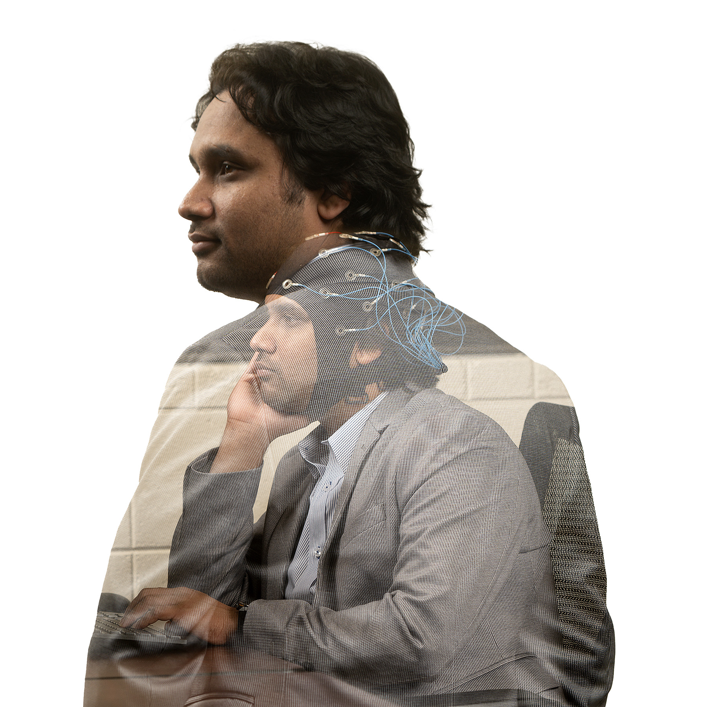
- saydulakbarmurad@gmail.com
- saydulakbar.murad@usm.edu
- Hattiesburg, MS, USA
PhD Candidate in Computer Engineering
Saydul Akbar Murad is a PhD Candidate at the University of Southern Mississippi, USA. His research operates at the intersection of Neuroscience, Artificial Intelligence, and Cybersecurity, focusing on decoding human brain activity (EEG) into text. With a master's degree from Universiti Malaysia Pahang, he has published extensively in high-impact journals (IF up to 10.6) regarding BCI and secure distributed systems. His work in Brain-Computer Interfaces (BCI) and Cybersecurity has earned him multiple "Best Paper" awards and international recognition. Beyond research, Murad serves as an editor for the Journal of Computer Science, contributing his expertise to the field.
Technical Expertise
Artificial Intelligence & ML Languages & Databases Simulators & ToolsEducation
Honors and Awards
Grants, Fellowships & Funding
Research Grants
Funding Body: National Science Foundation (NSF)
Role: Key contributor to the writing of the grant proposal
PI: Dr. Nick Rahimi
Funding Body: University of Southern Mississippi (USM)
Role: Key contributor to the writing of the grant proposal
PI: Dr. Nick Rahimi
Research Fellowships
"Efficient Real-Time EEG-to-Text Decoding Using LDEPTH-Based P2P Fog Computing Architecture..."
"FMRG-Bio: Future Nanotherapy Manufacturing-transitioning from the lab to the pharma factor"
Universiti Malaysia Pahang Al-Sultan Abdullah
Travel Grants
Support for conference registration, attending, and presenting papers.
Support for conference registration, attending, and presenting papers.
Publications
My research contributions across journals, conferences, and book chapters.
[1]. Ashim Dahal, Ankit Ghimire, Saydul Akbar Murad, Nick Rahimi “Redemption Score: An Evaluation Framework to Rank Image Captions While Redeeming Image Semantics and Language Pragmatics” arXiv (2025)
[2]. Saydul Akbar Murad, Ashim Dahal, Nick Rahimi “EEG-to-Text Translation: A Model for Deciphering Human Brain Activity” arXiv (2025)
[3]. Saydul Akbar Murad, Ashim Dahal, Nick Rahimi “Multi-Lingual Cyber Threat Detection in Tweets/X Using ML, DL, and LLM: A Comparative Analysis” arXiv (2025)
[4]. Ashim Dahal, Saydul Akbar Murad, Nick Rahimi “Efficiency Bottlenecks of Convolutional Kolmogorov-Arnold Networks: A Comprehensive Scrutiny with ImageNet, AlexNet, LeNet and Tabular Classification” arXiv (2025)
[5]. Farida Siddiqi Prity, Mirza Raquib, Saydul Akbar Murad, Md Jubayar Alam Rafi, Md Khairul Bashar Bhuiyan, Anupam Kumar Bairagi “Neural Network-based Study for Rice Leaf Disease Recognition and Classification: A Comparative Analysis Between Feature-based Model and Direct Imaging Model” arXiv (2025)
[6]. Ashim Dahal, Saydul Akbar Murad, Nick Rahimi “Heuristical comparison of vision transformers against convolutional neural networks for semantic segmentation on remote sensing imagery” IEEE Sensors Journal (2025) (IF 4.5)
[7]. Avi Deb Raha, Fatema Jannat Dihan, Mrityunjoy Gain, Saydul Akbar Murad, Apurba Adhikary, Md Bipul Hossain, Md Mehedi Hassan, Taher Al-Shehari, Nasser A Alsadhan, Mohammed Kadrie, Anupam Kumar Bairagi “Modeling and Predictive Analytics of Breast Cancer Using Ensemble Learning Techniques: An Explainable Artificial Intelligence Approach.” Computers, Materials & Continua (2024) (IF 1.7)
[8]. Saydul Akbar Murad, Nick Rahimi “Unveiling Thoughts: A Review of Advancements in EEG Brain Signal Decoding into Text” IEEE Transactions on Cognitive and Developmental Systems. (2024) (IF 5)
[9]. Saydul Akbar Murad, Nick Rahimi “Secure and Efficient Hierarchical P2P Fog Architecture: A Novel Approach for IoT” IEEE Internet of Things Journal. (2024) (IF 10.6)
[10]. Saydul Akbar Murad, Zafril Rizal M Azmi, Abu Jafar Md Muzahid, Md Murad Hossain Sarker, M Saef Ullah Miah, MD Khairul Bashar Bhuiyan, Nick Rahimi, Anupam Kumar Bairagi “Priority based job scheduling technique that utilizes gaps to increase the efficiency of job distribution in cloud computing” Sustainable Computing: Informatics and Systems. (2024) (IF 4.5)
[11]. Saydul Akbar Murad, Zafril Rizal M Azmi, Abu Jafar Md Muzahid, MD Khairul Bashar Bhuiyan, Md Saib, Nick Rahimi, Nusrat Jahan Prottasha, Anupam Kumar Bairagi “SG-PBFS: Shortest Gap-Priority Based Fair Scheduling technique for job scheduling in cloud environment” Future Generation Computer Systems. (2024) (IF 7.5)
[12]. KM Aslam Uddin, Farida Siddiqi Prity, Maisha Tasnim, Sumiya Nur Jannat, Mohammad Omar Faruk, Jahirul Islam, Saydul Akbar Murad , Apurba Adhikary, Anupam Kumar Bairagi “Machine Learning-Based Screening Solution for COVID-19 Cases Investigation: Socio-Demographic and Behavioral Factors Analysis and COVID-19 Detection” Human-Centric Intelligent Systems. (2023)
[13]. Md Bipul Hossain, Anika Shama, Apurba Adhikary, Avi Deb Raha, KM Aslam Uddin, Mohammad Amzad Hossain, Imtia Islam, Saydul Akbar Murad , Md Shirajum Munir, Anupam Kumar Bairagi “An Explainable Artificial Intelligence Framework for the Predictive Analysis of Hypo and Hyper Thyroidism Using Machine Learning Algorithms ” Human-Centric Intelligent Systems. (2023)
[14]. Chandra Shekhar Kundu, Apurba Adhikary, Md Shamim Ahsan, Abidur Rahaman, Md Bipul Hossain, Avi Deb Raha, Saydul Akbar Murad , Farid Ahmed “Design and analysis of performance parameters for achieving high efficient ITO/PEDOT: PSS/P3HT: PCBM/Al organic solar cell ” Journal of Optics. (2023) (IF 1.8)
[15]. Nusrat Jahan Prottasha, Saydul Akbar Murad, Abu Jafar Md Muzahid, Masud Rana, Md Kowsher, Apurba Adhikary, Sujit Biswas, Anupam Kumar Bairagi “Impact learning: A learning method from features impact and competition” In Journal of Computational Science. (2023) (IF 3.817)
[16]. Abu Jafar Md Muzahid, Syafiq Fauzi Kamarulzaman, Md Arafatur Rahman, Saydul Akbar Murad, Md Abdus Samad Kamal and Ali H Alenezi “Multiple vehicle cooperation and collision avoidance in automated vehicles: survey and an AI-enabled conceptual framework” Scientific Reports. (2023) (IF 4.996)
[17]. Israt Jahan, K. M. Aslam Uddin, Saydul Akbar Murad, M. Saef Ullah Miah, Tanvir Zaman Khan, Mehedi Masud, Sultan Aljahdali and Anupam Kumar Bairagi “4D: A Real-Time Driver Drowsiness Detector Using Deep Learning” Electronics, MDPI. (2023) (IF 2.690)
[18]. Saydul Akbar Murad, Abu Jafar Md Muzahid, and Zafril Rizal Bin M Azmi “A Review on Job Scheduling Technique in Cloud Computing and Priority Rule Based Intelligent Framework” Journal of King Saud University-Computer and Information Sciences. (2022) (IF 9.006)
[19]. Nusrat Jahan Prottasha, Abdullah Sami, MD Kowsher, Saydul Akbar Murad, Anupam Kumar Bairagi, Mehedi Masud, and Mohammed Baz “Transfer Learning for Sentiment Analysis Using BERT Base Supervised Fine Tuning” in Sensors. (2022) (IF 3.847)
[20]. Apurba Adhikary, Joy Bhuiya, Saydul Akbar Murad, Md. Bipul Hossain, K. M. Aslam Uddin,MD Estihad Faysal, Abidur Rahaman, Anupam Kumar Bairagi “Performance Evaluation of Micro Lens Arrays: Improvement of Light Intensity and Efficiency of White Organic Light-Emitting Diodes” in PLOS ONE. (2022) (IF 3.752)
[21]. Saydul Akbar Murad, ABU JAFAR MD MUZAHID and Apurba Adhikary “AI Powered Asthma Prediction Towards Treatment Formulation: An Android App Approach” in Intelligent Automation & Soft Computing. (2022) (IF 3.41)
[1]. Tomas Nader, Saydul Akbar Murad, Nick Rahimi “Human Activity Recognition Using an Ensemble Learning Approach”. International Conference on Computers and Their Applications, 2025 (Best Paper Award)
[2]. Ashim Dahal, Saydul Akbar Murad, Nick Rahimi “Embedding Shift Dissection on CLIP: Effects of Augmentations on VLM's Representation Learning”. Proceedings of the IEEE/CVF Conference on Computer Vision and Pattern Recognition (CVPR) Workshops, 2025.
[3]. Sindhuja Penchala, Saydul Akbar Murad , Indranil Roy, Bidyut Gupta, Nick Rahimi “Unveiling Text Mining Potential: A Comparative Analysis of Document Classification Algorithms”. Proceedings of 39th International Conference on Computers and Their Applications, 2024.
[4]. Saydul Akbar Murad , Nick Rahimi “Secure and Scalable Permissioned Blockchain using LDE-P2P Networks”. 2023 10th International Conference on Internet of Things: Systems, Management and Security (IOTSMS).
[5]. Saydul Akbar Murad , Zafril Rizal M Azmi, Faria Jerin Brishti, Md Saib, Anupam Kumar Bairagi “Priority Based Fair Scheduling: Enhancing Efficiency in Cloud Job Distribution”. 2023 IEEE 8th International Conference On Software Engineering and Computer Systems (ICSECS).
[6]. Saydul Akbar Murad, Nick Rahimi, Abu Jafar Md Muzahid “PhishGuard: Machine Learning-Powered Phishing URL Detection”. 2023 Congress in Computer Science, Computer Engineering, & Applied Computing (CSCE).
[7]. Saydul Akbar Murad,, Nick Rahimi, Indranil Roy Bidyut Gupta “Design of a New Secured Hierarchical Peer-to-Peer Fog Architecture Based on Linear Diophantine Equation”. 38th International Conference on Computers and Their Applications.
[8]. Md. Kowsher, Anik Tahabilder, Saydul Akbar Murad “Impact learning: A Robust machine learning algorithm”. Proceedings of the 8th International Conference on Computer and Communications Management (ICCCM 2020) (Best Paper Award).
[9]. Apurba Adhikary, Saydul Akbar Murad, Md. Shirajum Munir, and Choong Seon Hong “Edge Assisted Crime Prediction and Evaluation Framework for Machine Learning Algorithms”. 2022 International Conference on Information Networking (ICOIN).
[10]. Saydul Akbar Murad, Zafril Rizal Bin M Azmi, Nusrat Jahan Prottasha, and Md Kowsher “Computer-aided system for extending the performance of diabetes analysis and prediction” is published at the conference of ICSECS - 2021.
[11]. Saydul Akbar Murad, ABU JAFAR MD MUZAHID, Zafril Rizal Bin M Azmi and Imran Sunny “Comparative study on job scheduling using priority rule and machine learning.” in IEEE Conference 2021.
[12]. Md Shamimul Islam, Md Mahedi Hasan, Sohaib Abdullah, Jalal Uddin Md Akbar, N H M Arafat, Saydul Akbar Murad “A deep Spatio-temporal network for vision-based sexual harassment detection” in IEEE Conference 2021.
[13]. ABU JAFAR MD MUZAHID, Md. Abdur Rahim,Saydul Akbar Murad, Syafiq Fauzi Kamrulzaman and Md Arafatur Rahman “Optimal Safety Planning and driving Decision-Making for Multiple Autonomous Vehicles: A learning Based Approach” in IEEE Conference 2021.
[14]. N H M Arafat, Md Ileas Pramanik, Abu Jafar Md Muzahid, Bibo Lu, Sumaiya Jahan and Saydul Akbar Murad “A Conceptual Anonymity Model to Ensure Privacy for Sensitive Network Data” in IEEE Conference 2021.
[1]. Nick Rahimi, Saydul Akbar Murad, Sarah B. Lee “Entrepreneurship Opportunities in Cybersecurity” in Generating Entrepreneurial Ideas With AI, IGI Global, 2024.
[2]. Saydul Akbar Murad, Nick Rahimi, Indranil Roy, Bidyut Gupta “Security challenges in the Industrial Internet of Things (IIoT)” in Quality Assessment and Security in Industrial Internet of Things, CRC Press, 2024.
[3]. Mizanur Rahman, Sajib Debnath, Masud Rana, Saydul Akbar Murad, Abu Jafar Md Muzahid, Syed Zahidur Rashid, Abdul Gafur “Bangla Text Summarization Analysis Using Machine Learning: An Extractive Approach” in International Human Engineering Symposium, Springer Nature Singapore, 2023.
[4]. AKM Bahalul Haque, Tasfia Nausheen, Abdullah Al Mahfuj Shaan, and Saydul Akbar Murad “Security Attack Analysis and Countermeasures in 5G IoT Technology” in 5G and Beyond 2022.
Projects
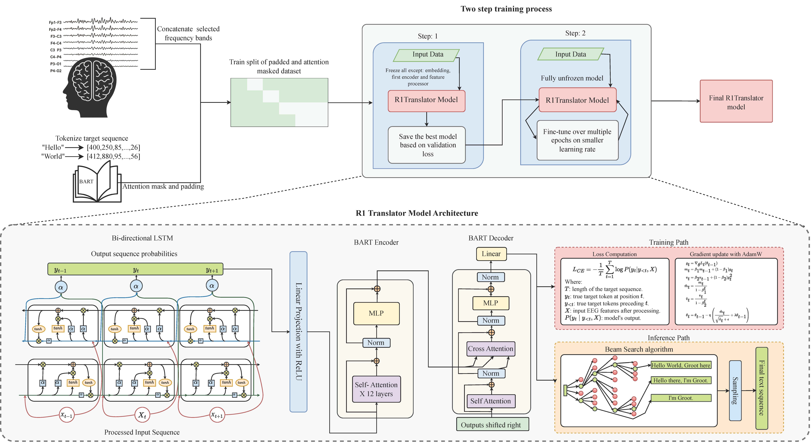
EEG to Text Decoding
Developed the R1 Translator model, an advanced EEG-to-text decoding framework using LSTM-based encoding and a pretrained BART transformer. Achieved SOTA results on the ZuCo dataset.
View on GitHub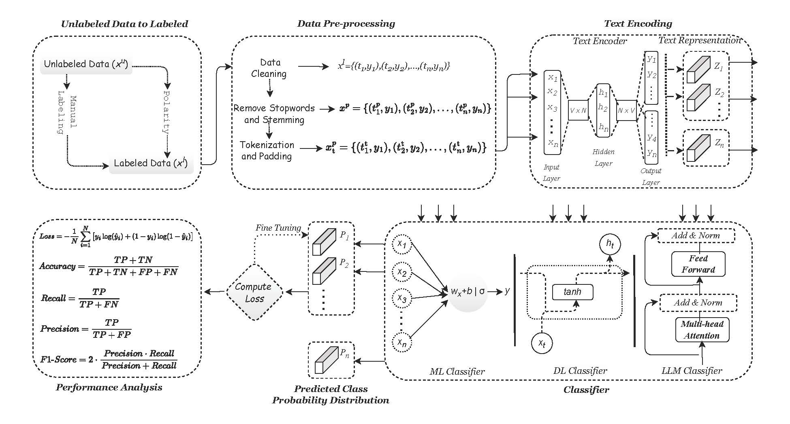
Cyber Threat Detection in Tweets/X
Developed a multi-lingual cyber threat detection system (English, Chinese, Russian, Arabic) using ML, DL, and LLMs. The research utilized RF, Bi-LSTM, and XLM-ROBERTa.
View on GitHub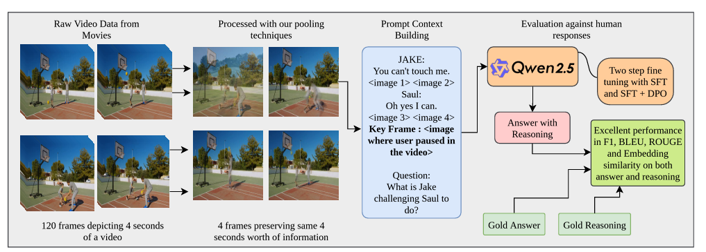
Preference-Optimized Video Question Answering (POVQA)
Developed POVQA, a framework that integrates temporal pooling and rationale supervision to improve data efficiency. Fine-tuning the QWEN-2.5-VL 7B model with SFT and DPO enhanced performance.
View on GitHub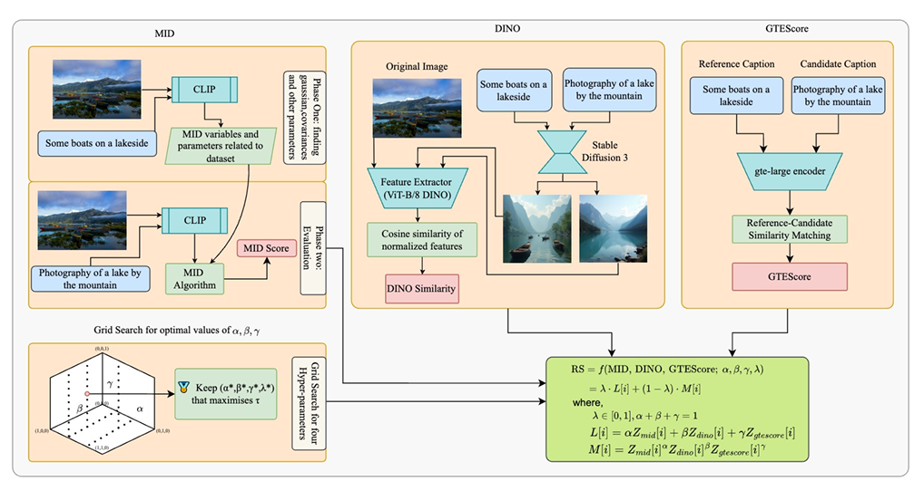
Redemption Score
Introduced a novel hybrid framework for evaluating image captions by triangulating Mutual Information Divergence, DINO-based perceptual similarity, and LLM-based text embeddings.
View on GitHub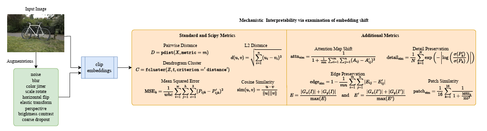
Embedding Shift Dissection on CLIP
Analyzed the impact of nine image augmentation techniques on the representation learning of VLMs (CLIP). Introduced systematic analysis of embedding shifts and attention map variation.
View on GitHub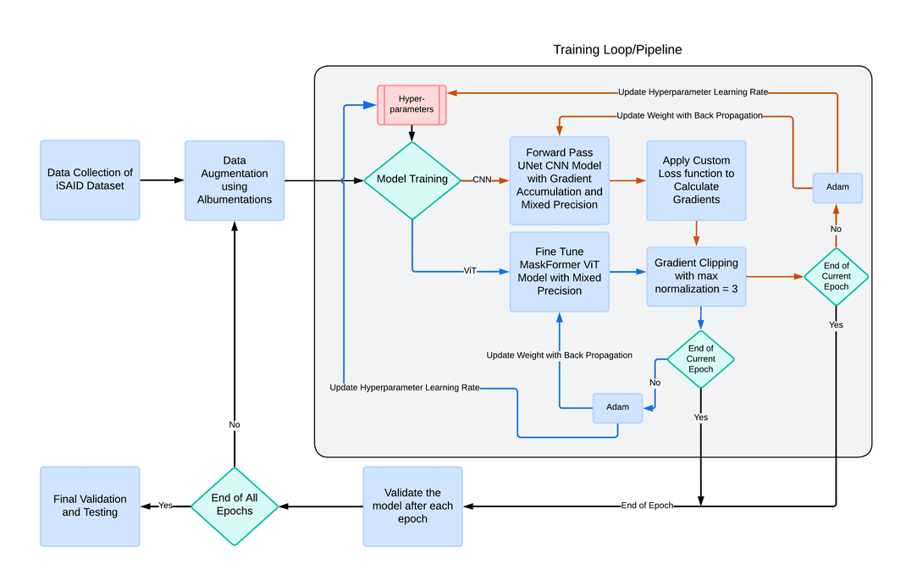
ViT vs CNN Segmentation
Conducted a heuristic comparison of ViT and CNN for semantic segmentation of remote sensing imagery. Introduced a novel weighted loss function to optimize IoU and Dice scores on the iSAID dataset.
View on GitHub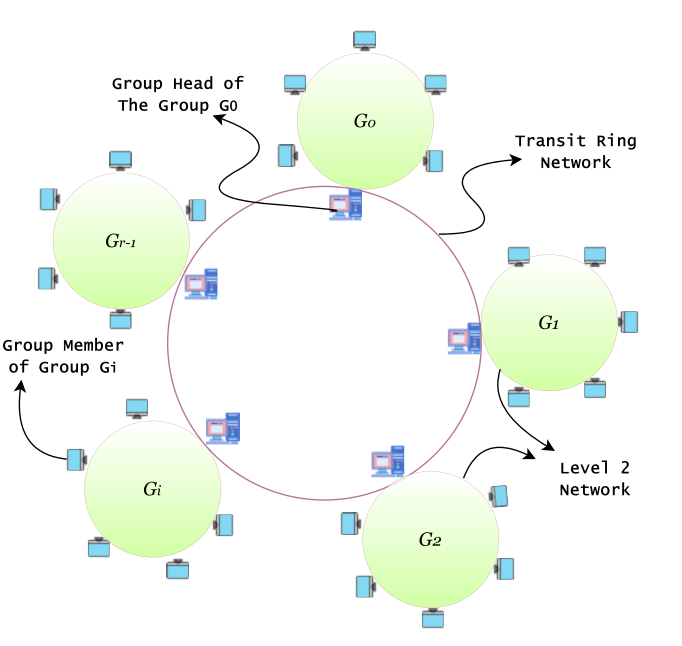
P2P Communication in Fog Computing
Introduced a new integrated P2P architecture within the fog layer, an advanced iteration of the 2-layer LDEPTH architecture. This framework organizes networks hierarchically.
View on GitHub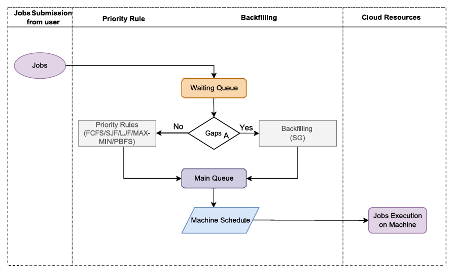
Job Scheduling Technique in Cloud Computing
Introduced and developed SG-PBFS, a novel priority-based job scheduling method. Conducted several experiments to validate and refine the technique for optimizing computational resources.
View on GitHub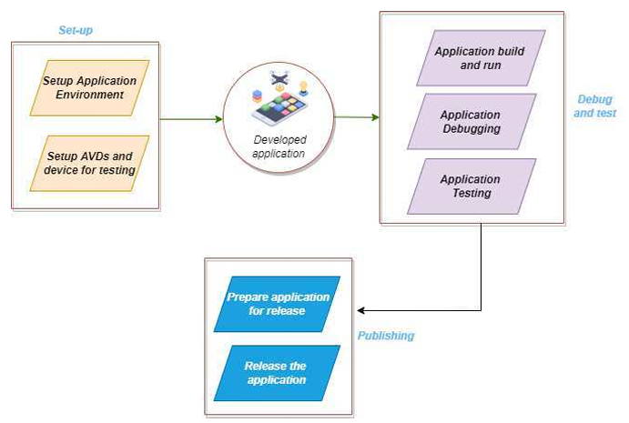
Department Management System (Android App)
Developed a comprehensive Android application using Java to serve as an educational management tool. It allows for efficient management of notices, courses, student profiles, and attendance.
View on GitHub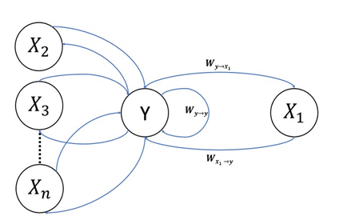
Impact Learning Implementation
Impact Learning is a robust, supervised ML algorithm for resolving classification and regression problems. It is used to achieve advanced results on many ML-related challenges.
Package: pip install impactlearning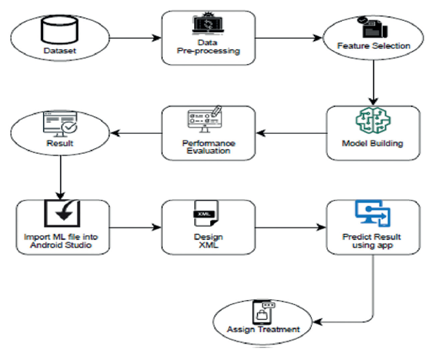
An Intelligent Android App to Predict Asthma
Contributed to research for a socially intelligent application aimed at developing predictive and treatment planning systems for asthma. Implemented an ML strategy focused on minimizing errors.

Java-Powered Customer Order Management System
Crafted using Java, this application facilitates customer order placement and item reviews. It also includes a comprehensive system to track and summarize all transactions for business analytics.
View on GitHubExperience
Teaching Experience
Instructor
University of Southern Mississippi, USA- CSC 102 Computer Science II (Spring 2026)
- CSC 327 Secure Software Development (Fall 2025)
- CSC 327 Secure Software Development (Summer 2025)
- CSC 102 Computer Science II (Spring 2025)
Graduate Assistant
University of Southern Mississippi, USA- CSC 428-591 Machine Learning in Cybersecurity
Lecturer
International Islamic University Chittagong, Bangladesh- ETE-4757 Database Management Systems
- ETE-4758 Database Management System Sessional
Instructor
Universiti Malaysia Pahang, Malaysia- BCS-3283 Mobile Application Development
Lecturer
National Model College, Noakhali, BangladeshSubjects Taught: Data Communication, Database Management Systems, Programming
Research & Job Experience
Graduate Research Assistant
Decoding human brain signals into text and researching ML in Cybersecurity and Blockchain systems.
Graduate Research Assistant
Focused on new priority-rule job scheduling techniques within a networking lab environment.
Lecturer
Conducted lectures and supervised labs for Database Management Systems.
Lecturer
Taught foundational and advanced computing subjects including Data Communication and Programming.
Industrial Trainee
Gained practical knowledge in optical fiber communication and corporate network structures.
Academic Service
Journal Editorship
Program Committee
Peer Reviewer
Verification of review records available upon request or via Web of Science/ORCID.